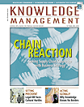
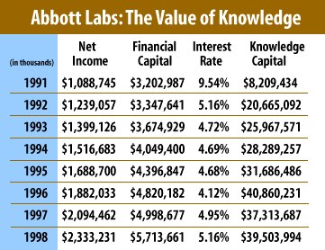

|
 October 1999 Subscribe e-Mail the Editor |
Calculating Knowledge CapitalNo mumbo-jumbo. Here's a simple method for deriving the value of intellectual assets. By Paul Strassmann
The valuation of knowledge capital makes it possible to assess the worth of the people who possess the accumulated knowledge about an organization. They are the individuals who leave the workplace every night (and may never return), storing in their heads the know-how acquired while receiving full pay. Their brains are repositories of knowledge accumulated over untold hours of listening and talking while not delivering any goods or services to paying customers. The employees' minds, and the files they manage, carry a share of the company's knowledge capital. This makes every employee a custodian of the most important assets a firm owns, even though these assets never show up on any financial reports. By contrast, the custodianship of financial assets has become a well-defined discipline that depends on procedures and regulations on how to account for and report these resources. Over a period of many years, an elaborate framework involving accountants, auditors, reporting standards and government oversight has been developed to do that. As will be shown in future articles, the financial assets of corporations represent only a small share of total corporate assets. By far, the most important assets are now in the form of corporate knowledge, yet the custodianship, accounting and reporting standards for these resources do not exist. Knowledge on the agenda Financial executives have shown a remarkable reluctance to put numbers on something many consider to be intangible. However, with the rising importance of knowledge assets, the time has come to place the management of knowledge on the agenda of executive managers, financial analysts and shareholders. To that end, one must start by developing an independently verifiable quantification of the worth of knowledge assets. Knowledge capital can be calculated because it reveals itself as the most important contributory influence in explaining how a firm earns its profits. The allocation of the respective contributions of knowledge capital and financial capital to profits can be made if one recognizes that financial capital is now a commodity—readily available at a price that reflects the interest rate that a firm pays for its borrowings. However, what makes a company prosper is not financial capital—which anyone can obtain for a price—but the effectiveness with which knowledge capital is put to use. Therefore, the annual returns realized on knowledge capital can be isolated after paying a "rental" for the financial capital and then subtracting that amount from profits. What remains is what economists call an "economic profit" and what some consultants call the "economic value-added." I label it "knowledge value-added" because it accounts for those missing elements that represent everything not shown on a conventional balance sheet. By filtering out the contributions of financial capital from the reported profits, we are left with a residual that is entirely attributable to what knowledge capital has actually delivered. In other words, knowledge value-added is the annual yield a firm realizes from its knowledge capital assets. Once you know the yield from a capital asset, calculating the value of its principle is straightforward. All you have to do is to divide the value of knowledge value-added by the costs of that capital and you get a verifiable and independently reproducible worth of a firm's knowledge capital. The tricky problem is determining the appropriate cost of capital to be used in estimating the worth of knowledge value-added. This is where academics have spun elaborate theories, including the most popular approach taught to MBA students as the "capital asset pricing model." I will show in future installments of this column why this theory is not only indefensible but also does not fit reality. Suffice it to say, I have found the best valuations of the cost of capital are those offered by the marketplace. It is reflected in the cost of interest a firm actually pays for its long-term debt. Case in pointTo illustrate a calculation of knowledge capital, I have chosen the pharmaceutical firm Abbott Laboratories. The same valuation method could be applied to any organization. This case offers a number of important insights. First, knowledge capital overwhelms financial capital (total assets minus total liabilities) by a multiplier ranging form three to eight. Second, it shows that the interest rate varies from year to year. Third, it reveals that knowledge capital grows much faster than net income or financial capital. The significance of these trends will be discussed in articles that will follow. Paul Strassmann, formerly the Deputy Asst. Secretary of Defense and vice president of strategic planning for Xerox Corp., is the originator of the "information productivity," "return-on-management" and "knowledge capital" trademarked concepts. He is currently president of a publishing company and adjunct professor at two universities. |